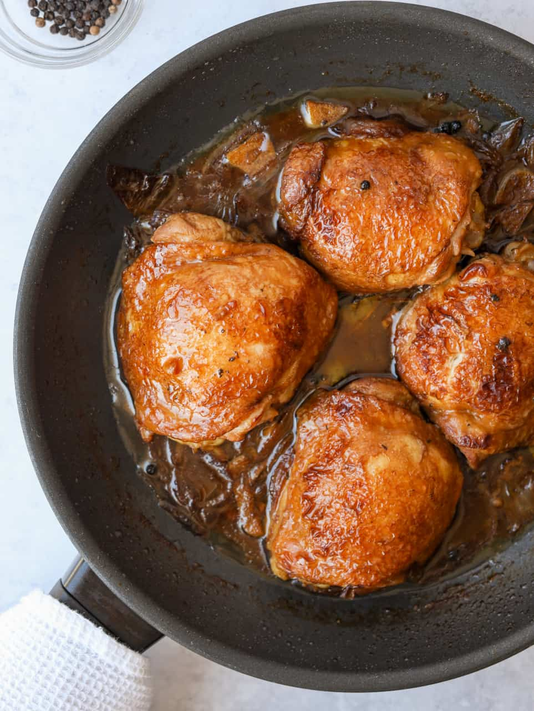

CHICKEN ADOBO

What is Adobo?
The dictionary defines adobo as "a spicy dish or sauce". In the Philippines,
adobo refers to a centuries-old process of preserving food by stewing it in
vinegar and salt. It was Spanish colonialists in the 16th and 17th century
who gave the native dish its current name, and Chinese traders who introduced
soy sauce to replace the salt. To this day, all Filipino adobo recipes have
vinegar in common, but the other ingredients depend on region, town, and even
family. Garlic, bay leaves, peppercorns, and other spices might go into the mix,
and even the type of vinegar can vary.
Ingredients
- 3 tbs of vegetable oil
- 3 lbs of chicken (thighs, legs or quarters)
- 6 cloves of garlic
- 1/2 cup of soy sauce
- 1/2 cup of rice vinegar
- 1/2 cup of water
- 2 tbs of pickling spiced
Steps
- Heat oil in a large pot over medium heat until oil is shimmering. Cook garlic in oil for no more than 30 seconds. Add all of the chicken to the pot; cook, stirring frequently, until chicken is white all over. Do not brown.
- Pour in soy sauce, vinegar, and water, and add the pickling spice. Make sure the spice ball is submerged. Bring to a boil, reduce heat to simmer, and place lid on pot so that some steam can escape. Simmer for 1 hour, or until chicken is very tender.